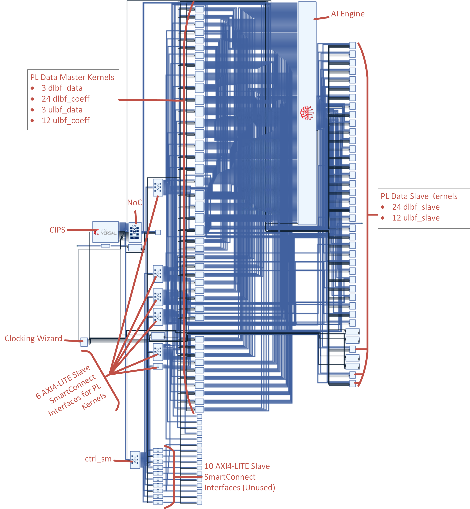

Recap¶
In Module 01 - Creating a Custom Platform, you created your custom embedded platform with the base components (CIPS, AI Engine, NoC, clocking infrastructure, and boot software) to create an AI Engine design that is stitched together.
In Module 02 - Creating an AI Engine Application, you introduced the beamforming kernel and created your downlink and uplink subgraphs, the data flow specification graph, and your top-level AI Engine application.
In Module 03 - Creating the PL Kernels, you solved the data storage problem by creating PL kernels to send reference input data to the AI Engine and store output data generated by the AI Engine.
In this module, you stitch together the custom platform (.xpfm), the AI Engine graph (.o), and the PL kernels (.xo) into an XCLBIN file with the Vitis™ compiler (v++) linker step.
Building the Design¶
The Vitis compiler linker step for this large design takes ~16 hours to complete. A pre-built build repo can be downloaded from the Xilinx website. Run the following commands to download and unzip the pre-built XCLBINs and XSAs into a build directory.
Use Pre-Built XCLBIN¶
make xclbin_prebuilt
or
wget -O build.zip https://www.xilinx.com/bin/public/openDownload?filename=build.zip
unzip build.zip
unzip build/rev1/hw/xclbin.zip -d build/rev1/hw
unzip build/rev1/hw/xsa.zip -d build/rev1/hw
unzip build/rev1/hw_emu/xclbin.zip -d build/rev1/hw_emu
Build XCLBIN from Scratch¶
Building the XCLBINs from scratch takes about 16 hours to complete. To create the Vitis compiler linker output from scratch, start the builds with the following commands:
make xclbin_all
or
make xclbin TARGET=hw REV=rev0 #fails timing
make xclbin TARGET=hw REV=rev1 #passes timing
make xclbin TARGET=hw_emu REV=rev1 #create for hardware emulation
or
mkdir build/rev0/hw
cd build/rev0/hw
v++ -l \
-t hw \
-f ../../../Module_01_Custom_Platform/build/sw/vck190_v1_0/export/vck190_v1_0/vck190_v1_0.xpfm \
--save-temps \
-g \
../../Module_02_AI_Engine_Design/libadf.a \
../../Module_03_PL_Design/ip_repo/dlbf_slave.xo \
../../Module_03_PL_Design/ip_repo/dlbf_data.xo \
../../Module_03_PL_Design/ip_repo/dlbf_coeffs.xo \
../../Module_03_PL_Design/ip_repo/ulbf_slave.xo \
../../Module_03_PL_Design/ip_repo/ulbf_data.xo \
../../Module_03_PL_Design/ip_repo/ulbf_coeffs.xo \
--config ../../../config.ini \
-o beamforming.rev0.hw.xclbin
cd ../../../
mkdir build/rev1/hw
cd build/rev1/hw
v++ -l \
-t hw \
-f ../../../Module_01_Custom_Platform/build/sw/vck190_v1_0/export/vck190_v1_0/vck190_v1_0.xpfm \
--save-temps \
-g \
../../Module_02_AI_Engine_Design/libadf.a \
../../Module_03_PL_Design/ip_repo/dlbf_slave.xo \
../../Module_03_PL_Design/ip_repo/dlbf_data.xo \
../../Module_03_PL_Design/ip_repo/dlbf_coeffs.xo \
../../Module_03_PL_Design/ip_repo/ulbf_slave.xo \
../../Module_03_PL_Design/ip_repo/ulbf_data.xo \
../../Module_03_PL_Design/ip_repo/ulbf_coeffs.xo \
--config ../../../config_2regslice.ini \
-o beamforming.rev1.hw.xclbin
cd ../../../
mkdir build/rev1/hw_emu
cd build/rev1/hw_emu
v++ -l \
-t hw_emu \
-f ../../../Module_01_Custom_Platform/build/sw/vck190_v1_0/export/vck190_v1_0/vck190_v1_0.xpfm \
--save-temps \
-g \
../../Module_02_AI_Engine_Design/libadf.a \
../../Module_03_PL_Design/ip_repo/dlbf_slave.xo \
../../Module_03_PL_Design/ip_repo/dlbf_data.xo \
../../Module_03_PL_Design/ip_repo/dlbf_coeffs.xo \
../../Module_03_PL_Design/ip_repo/ulbf_slave.xo \
../../Module_03_PL_Design/ip_repo/ulbf_data.xo \
../../Module_03_PL_Design/ip_repo/ulbf_coeffs.xo \
--config ../../../config_2regslice.ini \
-o beamforming.rev1.hw_emu.xclbin
Options¶
|Switch|Description| | — | — | |-l | Runs Vitis compiler in link mode to link XO, O, and XPFM input files and generate an XCLBIN output file.| |-t hw_emu | Specifies the hardware emulation build target.| |-f | Specifies the platform (.xpfm) file to which Vitis will link input files.| |–save-temps | Saves intermediate files/directories created during the link process.| |-g | Generates code for debugging the kernel.| |–config <configuration_file>.ini| Specifies a configuration file containing more Vitis compiler switches. This file also describes how many of each PL kernel to instantiate and how to connect the PL kernels to the PLIOs in the AI Engine. The rev0 build uses the config.ini. The rev1 build uses config_2regslice.ini, which contains timing closure techniques. | |-o beamforming.rev<0|1>.<hw|hw_emu>.xclbin | Specifies the name of the output file generated by the v++ command. During the linking process, the output files must end with the .xclbin extension.|
Dependencies¶
|File Name|Description| | — | — | |config.ini |Configuration file used in rev0.| |config_2regslice.ini |Configuration file used in rev1.| |Module_01_Custom_Platform/sw/build/…/vck190_v1_0.xpfm | The custom platform XPFM file built in Module 01.| |Module_02_AI_Engine_Design/build/Work/temp/test_bf_3x.o |The AI Engine graph object file built in Module 02.| |Module_03_PL_Design/build/dlbf_slave.xo | The dlbf_slave PL kernel built in Module 03.| |Module_03_PL_Design/build/dlbf_data.xo | The dlbf_data PL kernel built in Module 03.| |Module_03_PL_Design/build/dlbf_coeffs.xo | The dlbf_coeffs PL kernel built in Module 03.| |Module_03_PL_Design/build/ulbf_slave.xo | The ulbf_slave PL kernel built in Module 03.| |Module_03_PL_Design/build/ulbf_data.xo | The ulbf_data PL kernel built in Module 03.| |Module_03_PL_Design/build/ulbf_coeffs.xo| The ulbf_coeffs PL kernel built in Module 03.|
Build Products¶
Notice that the Vitis compiler linker step was invoked three times producing the following build directories:
|FileName|Description| | — | — | |build/rev0/hw/|Vitis compiler linker build with a naive implementation that fails timing. | |build/rev1/hw/|Vitis compiler linker build with timing closure strategies applied that meets timing. | |build/rev1/hw_emu/|Vitis compiler linker build that meets timing for hardware emulation run.|
The rev0 build contains the first revision of the Vitis compiler linker step that naively links the AI Engine graph design to the PL kernels and PL platform. However, because the beamforming design makes full use of PL resources, the straightforward implementation does not meet timing. The rev1 build is the second revision of the Vitis compiler linker step with timing closure techniques applied. In Module 06, you will be working through hardware emulation, and you will need to invoke the Vitis compiler linker step again with rev1 and TARGET=hw_emu.
Introduction: Linking the System¶
After the AI Engine graph is created and the RTL kernels are packaged, the v++ --link command links them with the target platform to build the device binary (XCLBIN). This XCLBIN is used to program the hardware and includes the PDI, debug data, memory topology, IP layout, and metadata.
Timing Failure¶
The straightforward invocation of the Vitis compiler linker step (rev0) fails to meet timing. Open the timing summary reports from rev0 and rev1 and compare them.
If you used pre-built files, the timing summary reports are in the following locations:
build/rev0/hw/vck190_v1_0_wrapper_timing_summary_routed.rpt
build/rev1/hw/vck190_v1_0_wrapper_timing_summary_routed.rpt
If you built from scratch, the timing summary reports are in the following locations:
build/rev0/hw/_x/link/vivado/vpl/prj/prj.runs/impl_1/vck190_v1_0_wrapper_timing_summary_routed.rpt
build/rev1/hw/_x/link/vivado/vpl/prj/prj.runs/impl_1/vck190_v1_0_wrapper_timing_summary_routed.rpt
REV0: vck190_v1_0_wrapper_timing_summary_routed.rpt¶
Scroll down to the Design Timing Summary section in the timing summary report. You will see that rev0 has a negative Worst Negative Slack (WNS) and a negative Total Negative Slack (TNS). This indicates that the design has failed timing.
...
------------------------------------------------------------------------------------------------
| Design Timing Summary
| ---------------------
------------------------------------------------------------------------------------------------
WNS(ns) TNS(ns) TNS Failing Endpoints TNS Total Endpoints WHS(ns) THS(ns) THS Failing Endpoints THS Total Endpoints WPWS(ns) TPWS(ns) TPWS Failing Endpoints TPWS Total Endpoints
------- ------- --------------------- ------------------- ------- ------- --------------------- ------------------- -------- -------- ---------------------- --------------------
-0.166 -306.843 4346 1007516 0.002 0.000 0 998300 0.000 0.000 0 384999
...
REV1: vck190_v1_0_wrapper_timing_summary_routed.rpt¶
Scroll down to the Design Timing Summary section in the timing summary report. You will see that rev1 has a WNS and TNS which are both zero. This indicates that the rev1 build meets timing.
...
------------------------------------------------------------------------------------------------
| Design Timing Summary
| ---------------------
------------------------------------------------------------------------------------------------
WNS(ns) TNS(ns) TNS Failing Endpoints TNS Total Endpoints WHS(ns) THS(ns) THS Failing Endpoints THS Total Endpoints WPWS(ns) TPWS(ns) TPWS Failing Endpoints TPWS Total Endpoints
------- ------- --------------------- ------------------- ------- ------- --------------------- ------------------- -------- -------- ---------------------- --------------------
0.000 0.000 0 1164704 0.030 0.000 0 1155488 0.000 0.000 0 464123
...
The rev0 build has a negative slack and fails timing while the rev1 build does not. During the Vitis compiler linker step, the rev0 and rev1 builds used different configuration files. A configuration file is used to specify more Vitis compiler options. The rev0 build used the config.ini file with no timing closure technique options. The rev1 build used the config_2regslice.ini file which is similar to the config.ini but contains additional timing closure techniques. Both the *.ini files are located in Module_04_AI_Engine_and_PL_Integration/ folder. The next sections detail the config.ini file for the rev0 build, and then the changes made in the config_2regslice.ini for a successful rev1 build which meets timing.
REV0 Configuration File (config.ini)¶
The Vitis compiler requires three sections in the configuration file (config.ini): [connectivity], [clock], and [advanced]. Open the config.ini file, review the comments, and follow the notes in the next sections of this module.
[connectivity] Section¶
The [connectivity] section includes the nk and sc switches.
Number of Kernels¶
The nk switch specifies the number of kernel instances or compute units (CUs) the v++ command adds to the device binary (XCLBIN). It specifies the kernel name, the number of instances (or CUs) of that kernel, and the CU name for each instance. For example, the first set of kernel instances is as follows:
#PL Kernel Instances for Downlink Subgraph 0
nk=dlbf_data:1:dlbf_data_00
nk=dlbf_coeffs:8:dlbf_coeffs_00.dlbf_coeffs_01.dlbf_coeffs_02.dlbf_coeffs_03.dlbf_coeffs_04.dlbf_coeffs_05.dlbf_coeffs_06.dlbf_coeffs_07
nk=dlbf_slave:8:dlbf_o00.dlbf_o01.dlbf_o02.dlbf_o03.dlbf_o04.dlbf_o05.dlbf_o06.dlbf_o07
The first line specifies there is one dlbf_data PL kernel named dlbf_data_00. The second line specifies there are eight dlbf_coeffs PL kernels named dlbf_coeffs_00 ... dlbf_coeffs_07. The last line specifies that there are eight dlbf_slave PL kernels named dlbf_o00 ... dlbd_o07. The config.ini file repeats this three times because there are three instances of the downlink subgraph.
The config.ini file also repeats this connection scheme for the ULBF PL kernels:
#PL Kernel Instances for Uplink Subgraph 0
nk=ulbf_data:1:ulbf_data_00
nk=ulbf_coeffs:4:ulbf_coeffs_00.ulbf_coeffs_01.ulbf_coeffs_02.ulbf_coeffs_03
nk=ulbf_slave:4:ulbf_o00.ulbf_o01.ulbf_o02.ulbf_o03
The config.ini file repeats this three times because there are three instances of the uplink subgraph. Each uplink subgraph requires one ulbf_data kernel, four ulbf_coeff kernels, and four ulbf_slave kernels.
Streaming Connections¶
The sc switch defines connections between the ports of the AI Engine graph and the streaming ports of PL kernels. The first set of sc connections are between the dlbf_data PL kernel instances and the AI Engine dlbfid (input data) ports. The next set of connections are between the dlbf_coeffs PL kernels and the AI Engine dlbfic (input coefficient) ports. The AI Engine ports are connected to the PL kernels’ M00_AXIS (master AXI4-Stream) ports.
The next connections are between the AI Engine dlbfo (output) ports and the dlbf_slave instances. The AI Engine ports are connected to the PL kernels’ S_AXIS (slave AXI4-Stream) ports.
The config.ini file repeats this connection scheme for all three instances of the DLBF system and for all three ULBF systems as well.
[clock] Section¶
The next section of the config.ini is the [clock] section. It only uses two clocks (id=0 and id=3). The clock id=0 is a 100 MHz clock. Clock id=3 is a 400 MHz clock. These clocks were created by the clocking wizard in the custom platform (Module 01 - Creating a Custom Platform). They are available for the Vitis compiler linker to use in this step. This is possible because they were exposed using the PFM.clock function when creating the custom platform (XPFM).
All of the PL kernels’ s_axi_aclk are connected to the 100 MHz clock (id=0). This clock is for the AXI4-Lite port of the PL kernels. It clocks the control path in the PL kernels which allows the CIPS to send/receive control and status signals from the PL kernels. The dlbf_data, ulbf_data, dlbf_coeff, and ulbf_coeff PL kernels have an m_axis_clk. The dlbf_slave and ulbf_slave PL kernels have an s_axis_clk. These clocks are connected to the 400 MHz clock (id=3). This clock is for the AXI4-Stream port on these PL kernels. It clocks the data path in the PL kernels which allows the AI Engine to receive or send data to/from the PL kernels.
[advanced] Section¶
param=compiler.addOutputTypes=hw_export: This switch specifies the creation of a new XSA for the target platform. The exported XSA has the name of the output file specified by the-ooption in the (v++) command, with the extension.xsa. This advanced option should only be set when creating a new XSA. This option is required for building the fixed platform in the bare-metal flow.param=hw_emu.enableProfiling=false: This switch sets the hardware emulation profiling feature off.param=compiler.maxComputeUnits=1000: This switch sets the maximum number of compute units allowed in the system. Without this switch, the default number of maxComputeUnits is 60.
New XSA Platform: rev0¶
If you built from scratch, you can open the block design in the Vivado™ project to view the new hardware platform at build/rev0/hw/_x/link/vivado/vpl/prj/prj.xpr.

Notice the new XSA hardware platform built on top of the custom platform you built in Module 01 (Creating a Custom Platform). It still contains the original building blocks: CIPS, NoC, AI Engine, Clocking Wizard, Processor Reset Systems, ctrl_sm, and 16 AXI4-Lite SmartConnect interfaces. However, you will also notice that only six of these are being used, and ten of them remain unused.
Each AXI4-Lite SmartConnect interface can have up to 15 AXI4-Lite master interfaces. Four of the AXI4-Lite SmartConnect interfaces have 15 AXI4-Lite master interfaces instantiated, one of them has 14, and one of them has four. This is total of 78 AXI4-Lite master interfaces which are connected to the newly linked PL kernels (three dlbf_data, 24 dlbf_coeff, three ulbf_data, 12 ulbf_coeff, 24 dlbf_slave, and 12 ulbf_slave kernels). The AI Engine is also connected to all the PL kernels through their AXI4-Stream interfaces.
Note: If you used pre-built files, the entire Vivado project is unfortunately too large to include in the pre-built file download.
Timing Closure¶
We know that the straightforward configuration file for the Vitis compiler linker did not meet timing. This was because this design is a high resource utilization design, running at a high frequency clock rate (400 MHz). The Vivado tool cannot perform timing closure without user intervention. This is solved by adding two axi4s-register slice IPs between the PL kernels and the AI Engine, updating the connections in the configuration file, and applying timing closure strategies during placement and routing.
Timing Closure Strategy¶
There are many different ways to close timing. This section details how timing closure been approached in the beamforming design.
First, find the problematic paths that resulted in the negative slack. The longest paths in the design are between the PL kernels and AI Engine, which cannot operate at 400 MHz clock frequency without negative slack.
The first thing to do is try to break up these paths and reduce the amount of time it takes to get from the PL kernel to the AI Engine. This was done by introducing two AXI register slice IPs in the paths to pipeline the data flow.
In addition to adding the AXI register slices, we also explored timing closure strategies that could be applied during each stage of implementation: placement, routing, and physical optimization. The full list of strategies available for each stage is documented in Vivado Design Suite User Guide Implementation Chapter 2: Implementing the Design (UG904).
REV1: Configuration File (config_2regslice.ini)¶
The next step is to review the configuration file that contains the timing closure strategy that created rev1, which did meet timing. Open the config_2regslice.ini file, review the comments, and follow the next sections of this module.
[connectivity] Section¶
An additional nk switch is added, which creates 528 axi4s_regslice PL kernels. In Module 03, you compiled the XO for the axi4s_regslice PL kernel definition.
nk=axi4s_regslice_64b:528
The sc switches are also altered so that there are two axi4s_regslice_64b kernels between the PL kernels and AI Engine. The following snippet is an example of how this is done.
sc=dlbf_data_00.M00_AXIS:axi4s_regslice_64b_1.S_AXIS
sc=axi4s_regslice_64b_1.M_AXIS:axi4s_regslice_64b_2.S_AXIS
sc=axi4s_regslice_64b_2.M_AXIS:ai_engine_0.dlbfid0
[clock] Section¶
All the axi4s_regslice-64b kernels are clocked by id=3 (400 MHz).
[vivado] Section¶
At the end of the config_2regslice.ini file, you will notice there are additional Vivado options given to the Vitis compiler linker.
prop=run.impl_1.STEPS.ROUTE_DESIGN.ARGS.MORE OPTIONS=-tns_cleanup
param=project.writeIntermediateCheckpoints=1
prop=run.impl_1.STEPS.PLACE_DESIGN.ARGS.DIRECTIVE=ExtraNetDelay_high
prop=run.impl_1.STEPS.PHYS_OPT_DESIGN.ARGS.DIRECTIVE=AggressiveExplore
prop=run.impl_1.STEPS.ROUTE_DESIGN.ARGS.DIRECTIVE=AggressiveExplore
These are the combination timing closure strategies applied during placement, route, and physical optimization that resulted in timing closure.
New XSA Platform: rev1¶
If you built from scratch, you can open the block design in the Vivado project to view the new hardware platform at build/rev1/hw/_x/link/vivado/vpl/prj/prj.xpr. Notice how the axi4s_regslice_64b PL kernels are inserted between the AI Engine and original PL kernels.
If you used pre-built files, the entire Vivado project is unfortunately too large to include in the pre-built file download.
References¶
AI Engine Documentation: Integrating the Application Using the Vitis Tools Flow, Linking the System
Vitis Application Acceleration Development Flow Documentation: Building and Running the Application, Build Targets - HW vs HW_EMU
Vivado Design Suite User Guide Implementation Chapter 2: Implementing the Design (UG904)
© Copyright 2021 Xilinx, Inc.
Licensed under the Apache License, Version 2.0 (the “License”); you may not use this file except in compliance with the License. You may obtain a copy of the License at
http://www.apache.org/licenses/LICENSE-2.0
Unless required by applicable law or agreed to in writing, software distributed under the License is distributed on an “AS IS” BASIS, WITHOUT WARRANTIES OR CONDITIONS OF ANY KIND, either express or implied. See the License for the specific language governing permissions and limitations under the License.